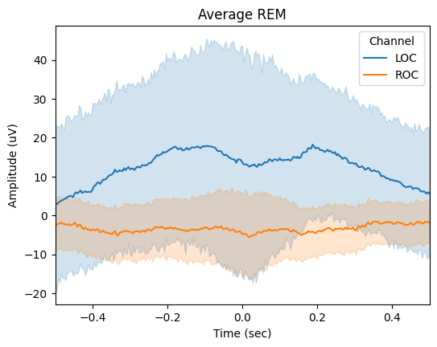

Rapid eye movements analysis¶
Introductory notes:¶
This notebook presents REMs detection functionality.
Recommended reading:
Import module¶
from sleepeegpy.pipeline import RapidEyeMovementsPipe
from os import makedirs,path
REMs detection¶
If you wish to change the path for output_dir ot input dir, change it below. If no such folders, they will be created automatically.
output_dir = "output_folder" # Output path and name can be changed here
input_dir = "input_files" # input files dir can be changed here
makedirs(input_dir, exist_ok=True)
makedirs(output_dir, exist_ok=True)
Add required files and data¶
Put all your files in the input folder.
Modify your eeg file name below. The file can be any format supported by the mne.read_raw() function.
Modify your hypnogram file name below
Make sure the hypno_freq is the right frequency.
For more information about the supported formats, see mne documentation
eeg_file_name= "resampled_raw.fif" #None # add your eeg_path here
hypnogram_filename = "staging.txt" # Hypnogram filename can be changed here (file must be in the input dir)
hypno_freq = 1
path_to_eeg = path.join(input_dir,eeg_file_name)
hypnogram_path = path.join(input_dir,hypnogram_filename)
assert path.isfile(path_to_eeg) and path.isfile(hypnogram_path), f"{path_to_eeg} or {hypnogram_path} not exist"
rems_pipe = RapidEyeMovementsPipe(
path_to_eeg=path_to_eeg,
output_dir=output_dir,
path_to_hypno=hypnogram_path,
hypno_freq=hypno_freq,
)
Please refer to the YASA’s documentation for details about the arguments.
rems_pipe.detect(
reference="average",
loc_chname="E46",
roc_chname="E238",
include=4,
freq_rem=(0.5, 5),
duration=(0.3, 1.2),
amplitude=(50, 325),
remove_outliers=False,
save=True,
)
Please refer to the YASA’s documentation for details about the arguments.
rems_pipe.results.summary(
grp_stage=False,
mask=None,
aggfunc='mean',
sort=True
)
| Start | Peak | End | Duration | LOCAbsValPeak | ROCAbsValPeak | LOCAbsRiseSlope | ROCAbsRiseSlope | LOCAbsFallSlope | ROCAbsFallSlope | Stage | |
|---|---|---|---|---|---|---|---|---|---|---|---|
| 0 | 11050.544 | 11050.904 | 11051.096 | 0.552 | 95.514371 | 30.423478 | 130.506125 | 69.111908 | 567.494181 | 147.051950 | 4 |
| 1 | 11094.860 | 11095.436 | 11095.712 | 0.852 | 112.146842 | 40.051066 | 200.957633 | 50.196786 | 420.903964 | 135.024205 | 4 |
| 2 | 11095.964 | 11096.508 | 11097.108 | 1.144 | 83.861166 | 33.723120 | 64.100500 | 46.741223 | 186.273207 | 46.131956 | 4 |
| 3 | 11482.476 | 11482.772 | 11483.136 | 0.660 | 59.031067 | 45.284152 | 75.523086 | 237.193022 | 142.850213 | 153.438315 | 4 |
| 4 | 15971.100 | 15971.276 | 15971.560 | 0.460 | 61.745377 | 60.780729 | 572.829439 | 183.557890 | 102.135926 | 308.358956 | 4 |
| ... | ... | ... | ... | ... | ... | ... | ... | ... | ... | ... | ... |
| 80 | 23049.292 | 23049.600 | 23049.904 | 0.612 | 104.243540 | 28.876271 | 330.751289 | 95.426070 | 314.121445 | 92.583937 | 4 |
| 81 | 23056.604 | 23057.204 | 23057.520 | 0.916 | 77.727534 | 32.451615 | 58.396074 | 63.557268 | 256.425427 | 99.318708 | 4 |
| 82 | 23075.852 | 23076.452 | 23076.592 | 0.740 | 116.082740 | 33.233345 | 120.322005 | 19.386448 | 859.366479 | 219.808008 | 4 |
| 83 | 23076.672 | 23077.272 | 23077.544 | 0.872 | 129.179400 | 56.446968 | 116.311652 | 61.487780 | 395.069480 | 239.110792 | 4 |
| 84 | 23077.856 | 23078.224 | 23078.712 | 0.856 | 112.166788 | 44.556604 | 274.326404 | 129.250414 | 220.010889 | 106.752248 | 4 |
85 rows × 11 columns
rems_pipe.plot_average(
save=True,
center="Peak",
time_before=0.5,
time_after=0.5,
filt=(None,None),
mask=None,
)
